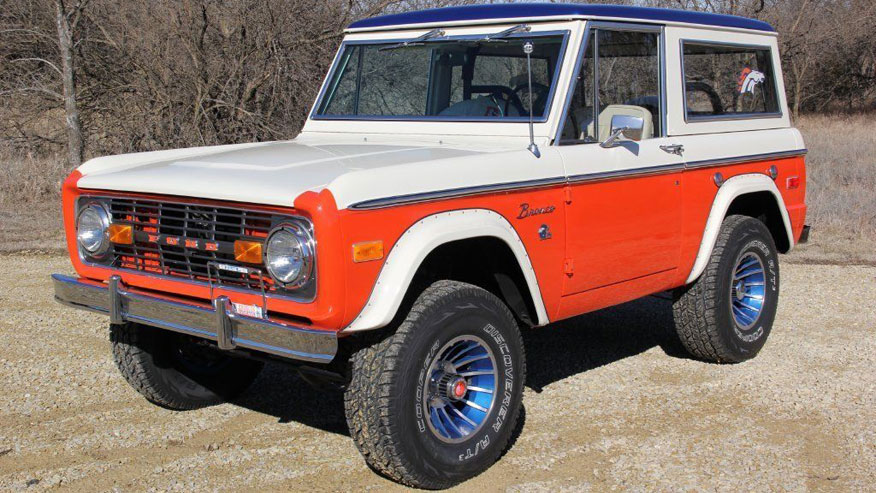

Thunder is the horse
mascot for the
Denver Broncos, The Battle of Dürenstein (11 November 1805) was an engagement in the Napoleonic Wars during the War of the Third Coalition, fought in the Wachau Valley of the Danube, 73 kilometers (45 mi) upstream from Vienna, Austria. A combined force of Russian and Austrian troops trapped a French division commanded by Théodore Maxime Gazan, part of the VIII Corps under Édouard Mortier. Pursuing the Austrian retreat from Bavaria, Mortier had overextended his three divisions. Mikhail Illarionovich Kutuzov, commander of the Coalition force, enticed Mortier to send Gazan's division into a trap, and the French troops were caught in a valley between